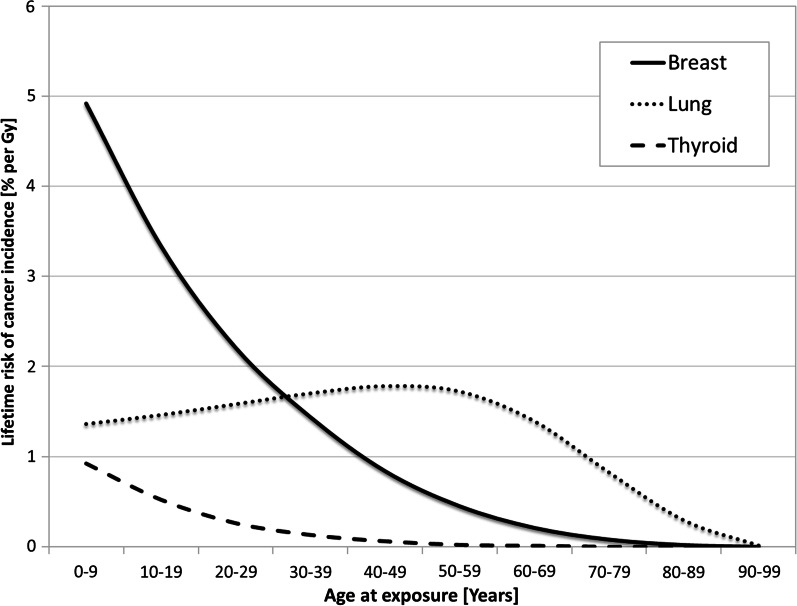
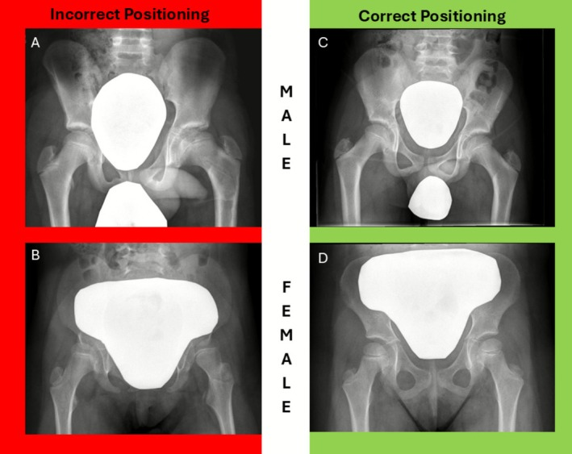

9422 — Bỏ che chắn chì trong X-quang trẻ / Discontinuing patient contact shielding in paediatric radiography
Tags: protocol:bo-che-chan protocol:AEC protocol:DRL protocol:X-quang-tre protocol:do-lieu vung:toan-than anatomy:tuyen-sinh-duc
Mức chắc chắn (certainty): tổng hợp y văn (literature synthesis) — khuyến cáo lấy từ đồng thuận châu Âu 2021 của 7 hội (Hiles P et al., Insights Imaging 2021, PMC8695402), khảo sát châu Âu 2023 (Granata C et al., PMC10279619), nghiên cứu triển khai 2026 tại bệnh viện nhi (Ryan E et al., PMC13121575), và các tổng quan 2023–2026 về chắn bismuth/CT. Đây là khuyến cáo dựa trên bằng chứng quan sát và đồng thuận chuyên gia, không có thử nghiệm lâm sàng về kết cục ung thư.
Câu chốt của bài: với X-quang thường quy ở trẻ, tấm chắn chì tiếp xúc thường không còn được khuyến cáo — không phải vì "bức xạ vô hại", mà vì lợi ích tuyệt đối rất nhỏ trong khi tác hại thì thật: che mất giải phẫu phải xem → chụp lại (gấp đôi liều), và đặt tấm chắn lên buồng đo AEC → máy tăng mAs → liều tăng chứ không giảm. Ngoại lệ hẹp còn lại là tuyến giáp trong nha khoa/ceph/CBCT (và một số ca đặc biệt có MPE).
1. Tổng quan — vì sao "che chắn" đã đổi dấu từ lợi sang hại
- Vật lý cũ (lý do tấm chắn ra đời): chì có Z rất cao, hấp thụ quang điện mạnh (≈ Z³/E³) nên chặn được chùm tia sơ cấp. Thập kỷ 1950–1990, liều một phim cao hơn nhiều và nỗi sợ hiệu ứng di truyền rất lớn → chắn tuyến sinh dục thành "chuẩn mực".
- Vật lý mới (vì sao lợi ích teo lại):
- Detector số (DR) có DQE cao → ảnh chẩn đoán được ở liều thấp hơn hẳn phim/screen; phần lớn liều còn lại nằm trong vùng đang chụp, không thể che.
- Tán xạ chủ yếu là tán xạ trong cơ thể (internal scatter) — tấm chắn đặt ngoài da không chặn được tán xạ phát ra từ trong mô.
- AEC (automatic exposure control) đo tín hiệu tại detector rồi điều chỉnh mAs. Nếu tấm chắn nằm trên buồng đo, tín hiệu giảm → máy tưởng "thiếu liều" → tăng mAs → liều vào mô trong trường tăng. Đây là cơ chế tăng liều do chắn, không phải giảm.
- Beam hardening/streak do chì làm giảm chất lượng ảnh → dễ chụp lại; một lần lặp lại nhân đôi liều của cả lần khám.
- DR có dải động rộng → dễ "dose creep": tăng mAs mà ảnh vẫn "đẹp", nên phải audit EI/DI thay vì tin mắt.
- Dịch chuyển sinh học–dịch tễ: ICRP 103 giảm trọng số mô tuyến sinh dục từ 0,2 xuống 0,08; hiệu ứng di truyền ở mức liều chẩn đoán chưa được chứng minh ở người.
- Ngưỡng định lượng cốt lõi:
| Đại lượng | Con số | Ý nghĩa | Nguồn |
|---|---|---|---|
| Giảm liều cơ quan nhờ chắn (các nghiên cứu cũ) | 30–95% | Con số tương đối nghe rất lớn | PMC8695402 |
| Giảm liều tinh hoàn khi chắn ngoài FOV trong CT bụng | 58–95% | Nhưng giảm nguy cơ tuyệt đối ~0,5/10.000 | PMC8695402 |
| Trọng số mô tuyến sinh dục (ICRP 103) | 0,2 → 0,08 | Giảm hơn một nửa "giá trị" bảo vệ | PMC8695402 |
| Nguy cơ ung thư vú trọn đời ở bé gái phơi nhiễm 0–9 tuổi | ~4,9%/Gy | Trẻ nhỏ nhạy nhất; giảm dần theo tuổi | PMC8695402, Fig. 1 |
| Nguy cơ phổi / giáp cùng lứa | ~1,3% / ~0,9% mỗi Gy | Cơ quan "nhạy" thay đổi theo tuổi | PMC8695402, Fig. 1 |
| Trung tâm châu Âu vẫn dùng chắn khi chụp trẻ | 57,5% (225 trung tâm, 35 nước) | Khoảng trống thực hành | PMC10279619 |
| Tỉ lệ chắn trước can thiệp (bệnh viện nhi) | 45% (nam) / 39% (nữ) | Mức nền để audit | PMC13121575 |
| Sau khi bỏ chắn: phụ huynh thắc mắc | 0,4% (31/7.581); yêu cầu chắn 11 ca trong 5 tháng rồi 0 | "Sợ phản ứng" là rào cản tưởng tượng | PMC13121575 |

Vì sao trẻ em là nhóm cần tối ưu liều nhất: ở 0–9 tuổi, vú ~4,9%/Gy, trong khi tuổi càng lớn nguy cơ càng giảm. Đây là lý do phải tối ưu collimation, projection, kVp — chứ không phải đặt chì lên bụng. Hình từ Insights into Imaging 2021 (PMC8695402), Fig. 1, CC BY 4.0.2. Mẫu hình + "gamut" theo cơ quan và modality
Đồng thuận châu Âu 2021 chia khuyến cáo theo cơ quan – modality – trong/ngoài FOV. Ba mức: "nên dùng" / "có thể dùng" / "không khuyến cáo".
| Cơ quan | Modality | Trong/ngoài FOV | Khuyến cáo 2021 |
|---|---|---|---|
| Tuyến sinh dục (nam và nữ) | Mọi X-quang | Cả hai | Không khuyến cáo |
| Tuyến giáp | Mọi X-quang (trừ ceph) | Trong FOV | Không khuyến cáo |
| Tuyến giáp | Cephalometric | Trong FOV | Có thể dùng |
| Tuyến giáp | X-quang, mammography, fluoroscopy, CT | Ngoài FOV | Không khuyến cáo |
| Tuyến giáp | Nha khoa trong miệng + ceph | Ngoài FOV | Có thể dùng |
| Tuyến giáp | CBCT | Ngoài FOV | Có thể dùng |
| Vú | Mọi X-quang | Cả hai | Không khuyến cáo |
| Thủy tinh thể | Mọi X-quang | Cả hai | Không khuyến cáo |
| Thai/nhi | Mọi X-quang | Trong FOV | Không khuyến cáo |
| Thai/nhi | X-quang, mammography, fluoroscopy, nha khoa, CT | Ngoài FOV | Không khuyến cáo |
- Vì sao nha khoa là ngoại lệ: tuyến giáp rất gần FOV và tỉ lệ bệnh nhi trong nha khoa cao; collar có thể chồng lấn vùng cần xem (ceph) nên phải cân nhắc — nếu dùng, không để collar vào vùng giải phẫu cần đánh giá (PMC8695402).
- Vì sao "ngoài FOV" gần như vô ích: liều ngoài trường chủ yếu là tán xạ nội tại; chắn ngoài da chỉ chặn phần rất nhỏ, trong khi có thể chạm vùng quét (overscan) của CT xoắn → vệt giả trên ảnh (PMC8695402).
- Nhóm đặc biệt: thai phụ, trẻ chụp lặp lại nhiều lần, can thiệp mạch máu phức tạp — nếu cân nhắc chắn, phải MPE (medical physics expert) tham gia và ghi vào protocol trước khi dùng, không quyết tại chỗ.
3. Bảng so sánh phân biệt (ma trận đối chiếu)
| Tình huống | Hiệu quả thật / hình ảnh | Chốt vào (rule-in: được dùng) | Chốt loại (rule-out: không dùng) | Gợi ý xác nhận |
|---|---|---|---|---|
| Chắn tuyến sinh dục trong X-quang chậu trẻ | Giảm liều tuyến sinh dục tương đối, nhưng nguy cơ tuyệt đối rất nhỏ; đặt sai che xương chậu/khung chậu | Gần như không ca nào trong X-quang thường quy | Mọi X-quang chậu trẻ — đặc biệt bé gái (khó che đúng buồng trứng) | Ảnh A–D: đặt sai che cả khung chậu; không dùng là chuẩn |
| Cổ áo tuyến giáp trong X-quang ngực/CT ngực | Giáp nằm ngoài FOV; giảm liều rất ít; collar có thể vào FOV và che đỉnh phổi/cột sống cổ | Chỉ nha khoa/ceph/CBCT ngoài FOV | X-quang ngực, CT ngực, fluoroscopy | Kiểm collar có chồng lên vùng cần xem không |
| Chắn vú trong CT ngực | Ở người > 30 tuổi phổi mới là cơ quan nhạy nhất; chắn vú có thể tăng liều phổi | Không có chỉ định thường quy | CT ngực mọi lứa tuổi | So sánh liều phổi – vú theo tuổi (Fig. 1) |
| Bismuth che mắt trong CT sọ | Giảm liều thủy tinh thể 29,8–41,5%; thêm AEC 41,3–60,8%; thêm OBTCM 58,8–71,3% — nhưng tăng nhiễu hốc mắt | Ca đặc biệt (chụp lặp lại nhiều, có MPE), có foam standoff | Thường quy — không có trong khuyến cáo châu Âu | Đo liều TLD trên phantom; đánh giá nhiễu |
| Chắn thai trong CT bụng/chậu | Liều thai chủ yếu do tán xạ nội tại của mẹ; chắn ngoài da kém hiệu quả, dễ chạm AEC/overscan | Ca cá biệt theo quy trình bằng văn bản | Mặc định mọi X-quang/CT | Hỏi – giải thích – ghi hồ sơ nếu vẫn dùng |
| Chắn "để trấn an" phụ huynh | Không giảm nguy cơ thực; tăng cảm giác sợ và mâu thuẫn thông điệp | Không | Mọi trường hợp chỉ vì tâm lý | Giải thích bằng số: 0,4% phụ huynh thắc mắc khi bỏ chắn |

Cùng một tấm chắn, đặt sai (A–B) che toàn bộ khung chậu; đặt "đúng" (C–D) vẫn là một thao tác thủ công dễ sai. Đây là lý do thực hành: bỏ chắn an toàn hơn cố đặt đúng. Hình từ J Med Radiat Sci 2026 (PMC13121575), Fig. 1, CC BY-NC-ND 4.0 — nguyên bản, không crop/ghép.4. Protocol — bỏ chắn có kế hoạch, không phải "tháo ra rồi thôi"
- Bước 1 — Chứng cứ & phạm vi: chốt danh mục bỏ chắn theo bảng mục 2; giữ ngoại lệ (nha khoa/CBCT/ceph, ca đặc biệt có MPE). Kiểm tra luật/quy định địa phương — một số nước vẫn bắt buộc chắn tuyến sinh dục; khi đó phải sửa quy định hoặc ghi rõ ngoại lệ, không tự ý vi phạm.
- Bước 2 — Kỹ thuật thay thế (quan trọng hơn tấm chắn):
- Collimation đúng vùng cần xem; PA thay AP cho ngực/cột sống/sọ khi được.
- kVp/mAs theo cân nặng, không theo "thói quen"; bỏ lưới (grid) ở trẻ nhỏ khi phù hợp.
- Fluoroscopy xung (pulsed), last-image hold, giảm thời gian chiếu.
- Audit EI/DI và DRL theo tuổi/cân nặng; theo dõi tỉ lệ chụp lại.
- Bước 3 — Con người: đào tạo tất cả kỹ thuật viên + bác sĩ; dùng mô hình COM-B/TDF (capability – opportunity – motivation → behaviour) thay vì chỉ "dán thông báo". Kịch bản trả lời phụ huynh: nêu lợi ích nhỏ – tác hại thật – kỹ thuật thay thế.
- Bước 4 — Đo kết quả: tỉ lệ chắn trước/sau (mốc tham chiếu 45%/39%), số ca phải chụp lại, số yêu cầu chắn, khiếu nại. Trong nghiên cứu triển khai: 7.581 bệnh nhi, chỉ 0,4% thắc mắc, 11 yêu cầu chắn trong 5 tháng rồi 0 (PMC13121575).
- Bước 5 — Ghi hồ sơ: nếu vẫn dùng chắn, ghi lý do, vị trí, người quyết định, tư vấn MPE; nếu không dùng, ghi "no contact shielding per protocol" để tránh tranh cãi.
flowchart TD
A["Chỉ định chụp X-quang cho trẻ"] --> B{"Đã tối ưu: collimation, PA, kVp, EI/DI?"}
B -->|"Chưa"| C["Tối ưu trước — không dùng chắn để bù"]
B -->|"Rồi"| D{"Tấm chắn có nằm trong FOV?"}
D -->|"Có"| E["KHÔNG dùng: che giải phẫu + AEC tăng liều"]
D -->|"Không"| F{"Tuyến giáp trong nha khoa / ceph / CBCT?"}
F -->|"Có"| G["Có thể dùng; kiểm không chồng vùng cần xem"]
F -->|"Không"| H["Không dùng; giải thích cho phụ huynh"]
G --> I["Ghi hồ sơ + audit định kỳ"]
H --> I
E --> I
C --> I
5. Biến thể bình thường và cạm bẫy
- "Bỏ chắn" ≠ "bỏ bảo vệ": biến số lớn nhất vẫn là collimation và số lần chụp lại, không phải tấm chì. Bỏ chắn mà không audit EI/DI thì dễ dose creep.
- Chắn đặt lên buồng AEC: đây là cạm bẫy làm tăng liều hay bị bỏ qua; đặc biệt ở bàn chụp có 3 buồng đo — che 1–2 buồng làm máy tăng mAs.
- CT xoắn và "overscan": tấm chắn đặt sát vùng quét có thể rơi vào phần chiếu thêm để tái tạo → vệt giả, phải quét lại.
- Bismuth trong CT sọ: có giảm liều thủy tinh thể thật (29,8–41,5%) nhưng tăng nhiễu hốc mắt và cần foam standoff; đây là ngoại lệ có điều kiện, không phải "bằng chứng để quay lại dùng thường quy". Bằng chứng CT còn không đồng nhất (PMC12963150, PMC10779489).
- Nha khoa/CBCT: collar tuyến giáp có thể dùng, nhưng nếu chồng lên vùng cần xem (ceph, góc hàm) thì phải bỏ; không có "một cỡ cho mọi ca".
- Thai phụ: chắn bụng trong một phim ngoài vùng chậu chỉ để "trấn an" là sai; nếu vẫn làm, phải không chạm AEC và không vào vùng quét CT.
- Phụ huynh yêu cầu chắn: giải thích bằng số liệu tuyệt đối, không bằng "an toàn tuyệt đối"; đừng hứa "không có nguy cơ".
- Luật địa phương: ở nơi quy định còn bắt buộc chắn, ghi rõ xung đột giữa khuyến cáo và luật; quyết định thuộc cơ sở + MPE, không phải kỹ thuật viên đơn lẻ.
6. Tự lượng giá — Blind Quiz
Ca 1 — Bốn ảnh chậu của trẻ nam/nữ, có/không có tấm chắn tuyến sinh dục. Nhìn ảnh, chọn vị trí "đúng".
- Gợi ý: ảnh A–B do một kỹ thuật viên khác thực hiện; ảnh C–D theo quy trình chuẩn.
- Câu hỏi: (1) Vì sao A–B bị coi là "sai"? (2) Nếu đây là phim chậu của trẻ 4 tuổi, bạn có dùng chắn không? (3) Hai hậu quả có thể xảy ra khi đặt sai?
Bấm để hiện đáp án
- Findings: A–B tấm chắn quá lớn, che gần hết khung chậu/xương cùng — vùng cần đánh giá; C–D tấm chắn nhỏ, chỉ trên vùng tuyến sinh dục.
- Trả lời: (1) Sai vì che giải phẫu và có thể chạm AEC → phải chụp lại; (2) Không — X-quang chậu trẻ thuộc nhóm "không khuyến cáo chắn"; (3) chụp lại (tăng liều) và bỏ sót tổn thương (gãy khung chậu, bệnh lý xương).
- Điểm cần nhớ: ngay cả "đúng" (C–D) vẫn là thao tác thủ công dễ sai — lý do thực hành là bỏ chắn và tối ưu kỹ thuật.
- Nguồn: Ryan E et al., J Med Radiat Sci 2026 (PMC13121575), Fig. 1, CC BY-NC-ND 4.0; khuyến cáo: PMC8695402.
Ca 2 — Biểu đồ nguy cơ trọn đời của nữ theo tuổi phơi nhiễm.
- Câu hỏi: (1) Ở 0–9 tuổi, cơ quan nào có nguy cơ cao nhất? (2) Vì sao nguy cơ giảm khi tuổi tăng? (3) Điều này thay đổi cách bạn tối ưu liều ở trẻ thế nào?
Bấm để hiện đáp án
- Trả lời: (1) Vú (
4,9%/Gy), rồi phổi (1,3%), giáp (~0,9%); (2) vì số năm sống còn lại để ung thư biểu hiện giảm dần, và mô tuyến vú chưa biệt hoá ở trẻ; (3) ưu tiên collimation + PA + kVp theo cân nặng, đặc biệt với ngực và cột sống — không dựa vào tấm chắn. - Cạm bẫy: biểu đồ là nguy cơ mỗi Gy, không phải liều của một lần chụp; đừng dùng để nói "một phim nguy hiểm".
- Nguồn: Hiles P et al., Insights into Imaging 2021 (PMC8695402), Fig. 1, CC BY 4.0.
Ca 3 — Kỹ thuật viên đặt tấm chì lên bụng một bé gái 6 tuổi cho phim chậu; sau đó máy báo tăng mAs và ảnh bị lặp lại vì mất chi tiết khung chậu.
- Câu hỏi: hai cơ chế nào giải thích liều tăng? Xử trí đúng?
Bấm để hiện đáp án
- Cơ chế 1 — AEC: tấm chắn trên buồng đo làm tín hiệu giảm → máy tăng mAs → liều vào mô trong trường tăng.
- Cơ chế 2 — chụp lại: chì che khung chậu → ảnh không đủ chẩn đoán → lặp lại → liều cả lần khám gấp đôi.
- Xử trí: bỏ tấm chắn, collimate lại đúng khung chậu, chụp theo protocol trẻ; ghi nhận sự cố và audit EI/DI; giải thích cho phụ huynh rằng bỏ chắn là theo khuyến cáo, không phải "cẩu thả".
- Nguồn: PMC8695402 (cơ chế AEC, artifact); PMC13121575 (thực hành bỏ chắn).
Bài liên quan chéo
- 9424 – Chụp lại trong X-quang trẻ: mỗi lần lặp +100% liều, mục tiêu 5%/7% (nhi), LRRL 10,6%, 93,1% ảnh bị từ chối vẫn đủ chẩn đoán — hệ quả trực tiếp của chắn che mất giải phẫu
- 9421 – CBCT nón trong nha khoa & chỉnh nha ở trẻ — ngoại lệ tuyến giáp, FOV, DRL
- 9420 – Che chắn thủy tinh thể trong CT trẻ — bằng chứng CT và bismuth
- 937 – Liều CT trẻ: SSDE và DRL — audit liều, EI/DI
- 935 – Tối ưu liều can thiệp nhi: DRL — fluoroscopy xung, last-image hold
- 932 – An toàn bức xạ CT/DSA — nguyên lý ALARA
Ảnh
9422_dat-chan-sai-vi-tri_XR_PMC13121575-Fig1.jpg,9422_nguy-co-theo-tuoi_Bieu-do_PMC8695402-Fig1.jpg— nguồn + giấy phép từng ảnh:images/CREDITS.md.- Ảnh Fig. 1 (PMC13121575) là CC BY-NC-ND — giữ nguyên bản, không crop/ghép; ảnh biểu đồ (PMC8695402) là CC BY 4.0.
Không dùng để chẩn đoán độc lập khi chưa có người hướng dẫn.